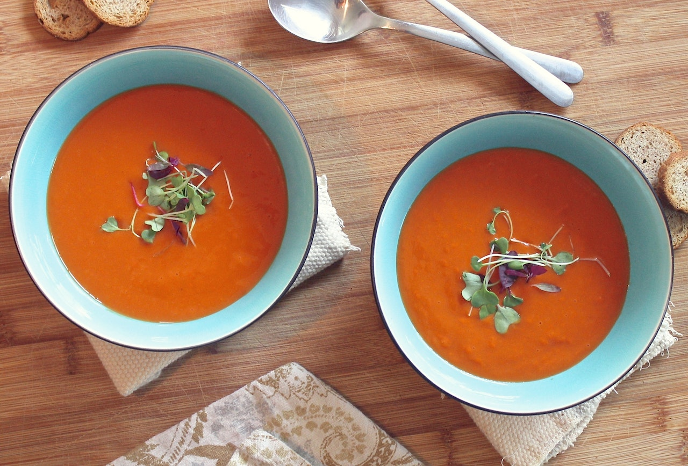

Fresh Tomato Soup
- 
This simple, quick and easy recipe for homemade fresh tomato soup is perfect to make when tomatoes are ripe in gardens and farmers' markets for a delicious summertime treat.
Ingredients
- 4 cups chopped fresh tomatoes
- 1 slice onion
- 4 cloves garlic
- 2 cups chicken broth
- 2 tablespoons butter
- 2 tablespoons all-purpose flour
- 1 teaspoon salt
- 2 teaspoons white sugar, or to taste
Steps
- In a stockpot, over medium heat, combine the tomatoes, large slice of onion,
garlic cloves, and chicken broth. Bring to a boil, and gently boil for about 20
minutes to blend all of the flavors. Remove from heat and run the mixture
through a food mill into a large bowl, or pan. Discard any stuff left over in
the food mill.
- In the now empty stockpot, melt the butter over medium heat. Stir in the flour
to make a roux, cooking until the roux is a medium brown. Gradually whisk in a
bit of the tomato mixture, so that no lumps form, then stir in the rest. Season
with sugar and salt, and adjust to taste.
Back To Main Page